Brief
In this project we want to create 3 sprints to make computerised orders for a Pastabar. We want to include customer details, kinds of pasta ordered and pick-up or delivery requirements into a computer and have it display the delivery details, itemised order, and total cost.
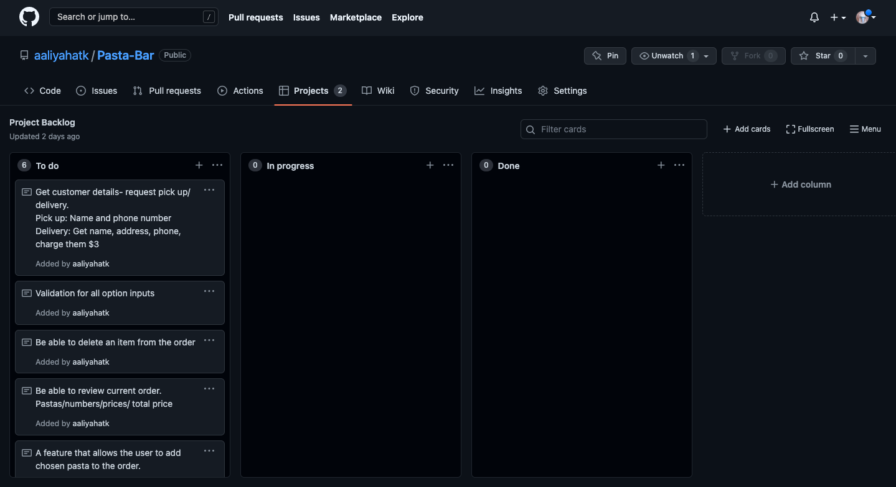Describing relevant implications
Usability
A digital product always be easy/intuitive to operate/run. It should clearly communicate to the user what is happening. If any errors occur the program should clearly communicate what problem occurred. A digital product should clearly communicate to the user what is happening when the program is operating and should let the user know what is happening eg. words, screen organisation, colour changes etc. If the user happens to make any mistakes the program should clearly communicate what problem occurred and give the user another opportunity to rectify.
Functionality
Functionalty means that the digital product that we have created must have no errors and must not give any inaccurate information. The digital product that was created we expect to work properly for example, we expect the digital product to not crash and not give any inaccurate information or feedback such as translations of words.
Sustainability and future proofing
Sustainability and future proofing is useful as change occurs and a product may need to be updated- often by someone else. This means that the database must be easy to update, can add more data and easily be able to rebuild what the person may already know. Future proofing is useful as change occurs and a product may need to be updated- often by someone else. To make this easier, a digital product/program should always be clearly commented and communicated. It should also be structured so that it is easy to add any more data in the future.
Sprint 1
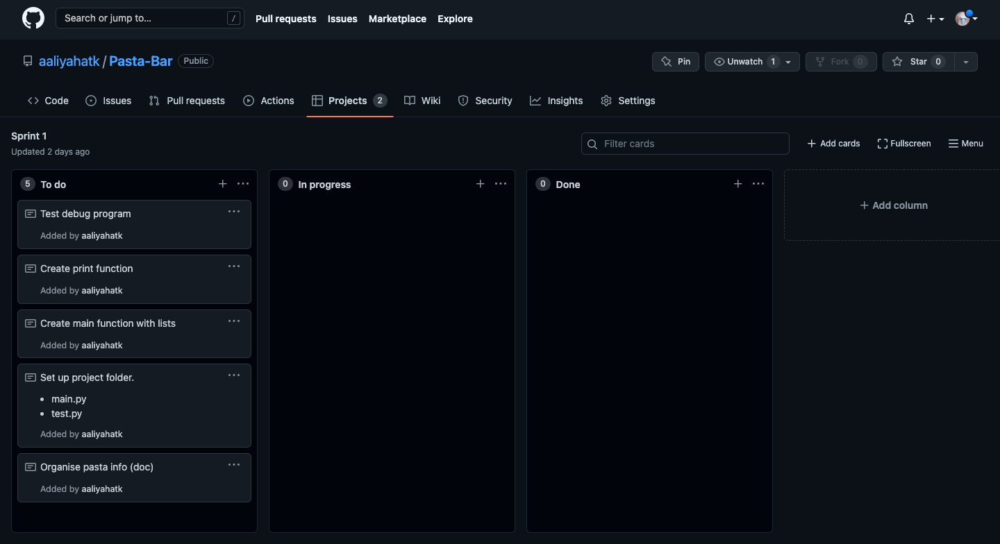 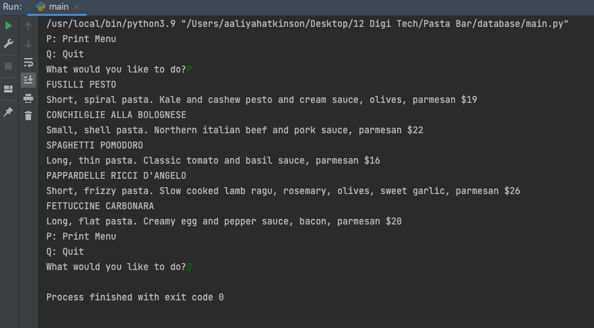Reflection of sprint 1:
In Sprint one, I created a program that allows for the user to print out the menu of the pastas as well as quit the program at any time. I selected a range of pastas from a pastaria as well as the description of the pasta and used these in my program. When the menu of the pastas is printed out, it includes a description of the pastas as well as the cost of the pasta. This allows the user to understand what pasta they would like/ what pasta they are actually ordering as well as the price of what they are purchasing. I used a project backlog to help me understand what I needed to do in this sprint, which also allowed me to tick off everything that I had completed by moving it into the ‘Done’ column. I did manage to complete everything that I had put into this project backlog. In this sprint, I did not come across any errors when I was coding and everything worked as it was supposed to. My next step is to add a new function that allows the user to add pasta to their order using a list with indexes, which will ask them which pasta they would like to add to their order as well as the quantity of the pasta.
Sprint 2

 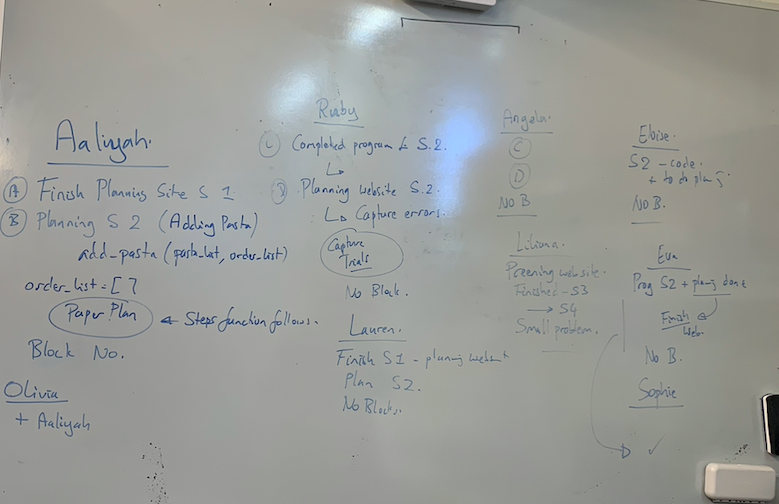
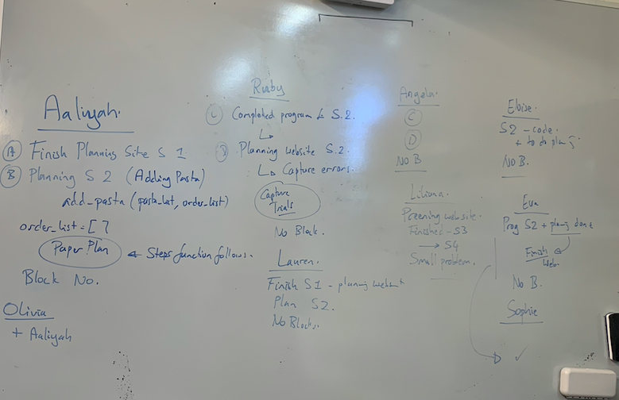
Reflection of sprint 2:
In Sprint two, I updated the program to allow the user to add pasta to their order by printing out the pasta in a list. I coded the program to print out the menu with indexes so that it is easier for the user to select which pasta they would like to add to their order. When the user adds pasta to their order they are asked which pasta they would like as well as how many of the pasta they would like that they have selected to add to their order. I used another project backlog in this sprint which helped me understand what I need to update in my program. This was helpful in this version because it reminded me of everything that I needed to complete and I was able to complete everything on this project backlog and move everything into the ‘Done’ column. As the same as sprint one, I did not come across any errors whilst I was coding these updates and everything worked as it should. My next step is to add a new function that will allow the user to review their order (the pastas they have ordered). When the user reviews the order, I want to be able to print out the pasta they have ordered, the quantity of pasta they have ordered and the total price of the pastas.
Sprint 3
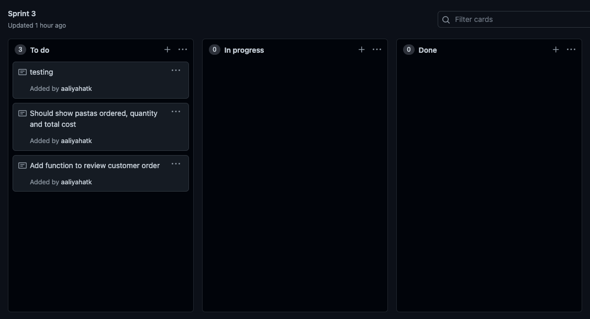 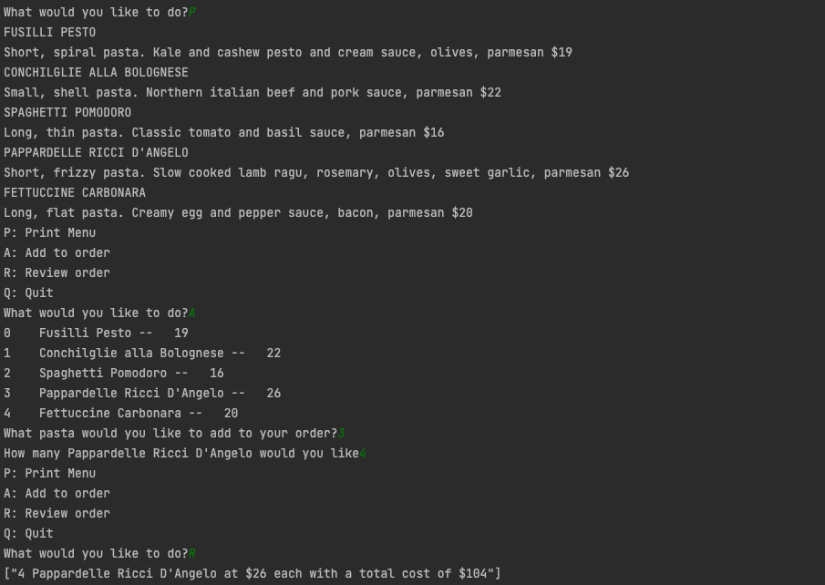Reflection of sprint 3:
In sprint three, I updated the program to allow the user to review their order. When the user reviews the order it prints out the name of the pastas they have ordered, the quantity of the pastas that they have ordered and the total cost of all of the pastas they have added to their order. This allows the user to see what they have ordered and how much it will cost them for their order. I used a project backlog again for this sprint 3 and I managed to get everything complete on this project backlog and it was helpful to give me reminders along the way of what I needed to complete in this sprint. I had no errors whilst I was working on the sprint 3, everything was working as it should be and the customer order/ review prints how I wanted it to. My next step of this program is to be able to edit the order by adding or deleting pastas to the customer order. To do this it is basic validation.
Sprint 4
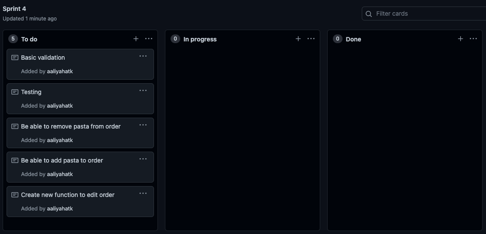 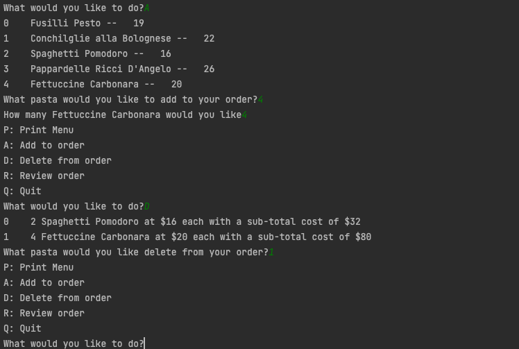Reflection of sprint 4:
In sprint four, I updated the program to allow the user to delete pasta from their order, as they are already able to add new pasta. When the user decides that they would like to delete a pasta from their order they are able to select the option to delete pasta. Once the user selects this option they are able to choose which pasta they would like to by using indexes. Once they select which pasta they would like to delete, it removes the cost of that pasta from the total price. I used a project backlog again for sprint 4 which was useful. I managed to complete everything on this project backlog. My next step for this program is for the user to be able to complete the order and have the option of pick up/ delivery and add a $3 delivery fee.
Sprint 5
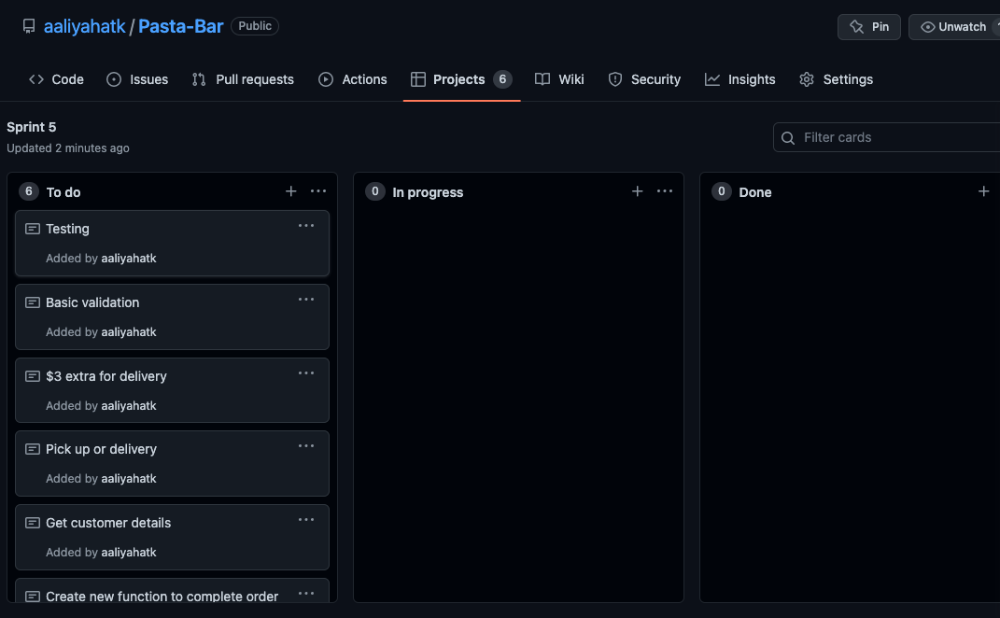 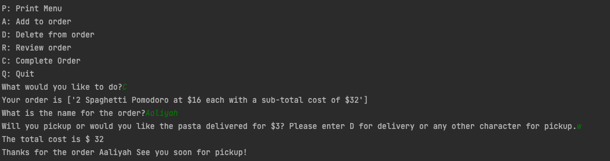Reflection of sprint 5:
In sprint five, I updated the program to allow the user to complete the order and then choose whether they would like pick up or delivery for their pasta. If delivery is chosen then the program asks the user for their customer details such as name and address for delivery. By choosing delivery, it is also a $3 charge which gets added to the total cost of the pasta order. If pick up is chosen, there are no further costs. When the user completes their order, the program resets. In sprint 5 I used a project backlog again which was helpful again as I was able to look back and reflect on remembering what I needed to do to complete the project. The next step for this program is going to be validation for the user. Such as only being able to input integers where they are needed and letters elsewhere.
Sprint 6
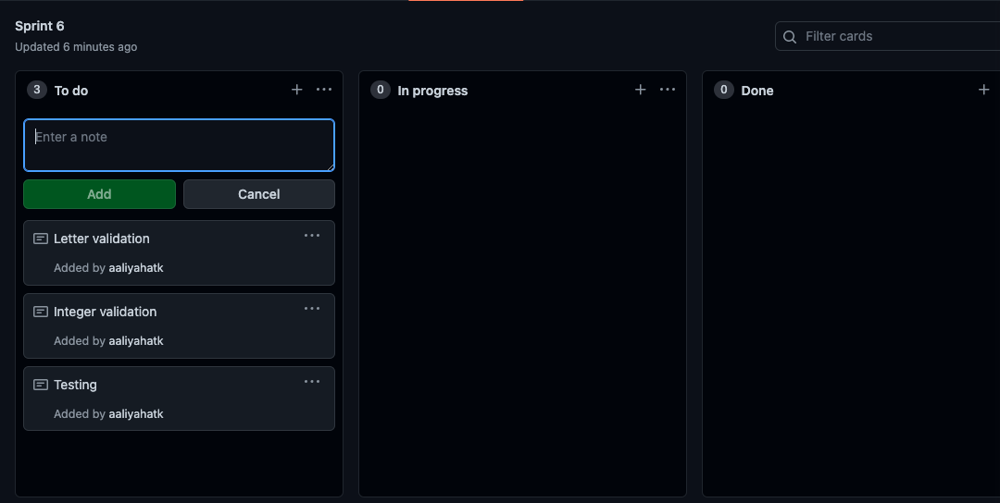 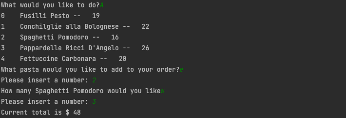Reflection of sprint 6:
In sprint six, I added some validation to the options that the user is choosing. For example, if the program asks for the user to select a number, if the user does not choose a valid integer or types a letter/ invalid character the program gives the user another chance to correctly choose. Again, I used a project backlog to help me complete this version which was helpful as I was able to check what I needed to do to continue with my validation.
Adressing relevant implications
Usability
With the usability relevant implications I made sure that every user input is validated and I give the user another chance to rectify their answer. My digital product is easy to understand and operate and clearly communicates with the user what is going on. My user is given nice feedback and a score throughout my program: Validated user inputs- I have validated all of my user inputs, these involve validating integers and letters. Easy to understand and operate- my program is very easy to understand and operate because I have very clear and plain english instructions as to what is going on in my program. Nice feedback- Throughout my program I use feedback for every input, all of my feedback is nice and gives them any advice on what they need to improve/ fix in their answer. Eg: "Invalid answer, try again.”
Functionality
To make sure I used the functionality relevant implication I made sure to systematically test my program throughout my whole development process of this assessment. I did this to ensure that my program does not crash while I am coding my sprints to ensure my final product works or give any inaccurate information to the user.
Sustainability and future proofing
To ensure that my program is easier for future proofing and is structured so it is easier to add more data to my program in the future to do this I added comments to my program and pep checked my program to make sure it follows python programming conventions such as Commenting- I added multiple comments throughout my program to explain to anyone looking at my code what is going on and so that they can have an understanding of what each section of code meant in case anything needs/wants to be added into my code in the future.
This button takes you back to the top of the page